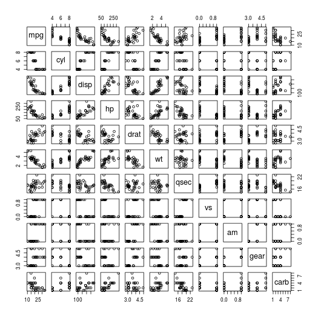

在博文怎么在hexo博客系统中用Rmarkdown写文章中我介绍了如何使用我创建的函数自动生成Rmarkdown文档并将其转换为markdown博文。文章并没有具体讲生成图片的过程，我在前一篇文章怎么对连续变量分组并进行生存分析写作时发现用hexo系统存在一些小问题：hexo生成public静态网页文档集合（包括主页展示的所有内容）和博文所在的source文件夹是相对独立的，这会导致markdown的图片引用路径时在本地用一些markdown预览器可以看到图片，但实际呢，在部署的博客上却看不到了！
根据hexo官方文档https://hexo.io/zh-cn/docs/asset-folders.html的描述，我们可以将图片扔到source/images文件夹下，然后通过类似于  的方法访问它们。值得注意的是，这种方法使用的既不是图片的绝对路径也不是图片的相对路径，所以它会出现了一个略微尴尬的情况，在本地不能预览，在部署好的博客上却能看到！上一篇博文写作时正准备回家，没时间整这个幺蛾子，就是这样发的文章。
的方法访问它们。值得注意的是，这种方法使用的既不是图片的绝对路径也不是图片的相对路径，所以它会出现了一个略微尴尬的情况，在本地不能预览，在部署好的博客上却能看到！上一篇博文写作时正准备回家，没时间整这个幺蛾子，就是这样发的文章。
当然官网提到可以使用一些非markdown标记符来引用图片，这种我自认为不可取，我看重的就是markdown的简约、文章易迁移特性，使用这种方式会让我的文章不够自由。
仔细阅读文档后，发现可取的办法是：
对于那些想要更有规律地提供图片和其他资源以及想要将他们的资源分布在各个文章上的人来说，Hexo也提供了更组织化的方式来管理资源。这个稍微有些复杂但是管理资源非常方便的功能可以通过将
config.yml文件中的post_asset_folder选项设为true来打开。
_config.yml
post_asset_folder: true
当资源文件管理功能打开后，Hexo将会在你每一次通过hexo new [layout] <title>命令创建新文章时自动创建一个文件夹。这个资源文件夹将会有与这个 markdown 文件一样的名字。将所有与你的文章有关的资源放在这个关联文件夹中之后，你可以通过相对路径来引用它们，这样你就得到了一个更简单而且方便得多的工作流。
我使用这种方法新建了一个文档，顺便用git监控哪些文档发生了改变，发现这个效果开启其实就是在source/_post目录下新建一个跟新建的markdown博文（去掉后缀）同名的文件夹。那么问题的解决就比较简单了，我只需要设定好knit将rmd文档转换为md文档时，产生图片的输出路径即可，也就是设定opts_chunk$set(fig.path="../_posts/2018-02-12-how-to-create-an-independent-figpath/")选项。这又可以通过两种方式实现，一是在写作使用的rmarkdown模板文件中直接修改此句，每次以手动的方式设定路径；二是将写好的rmarkdown文章读入R，利用正则表达式抓取该部分的值，然后修改选项为每篇文章对应的文件夹名。
1 | new_md_post <- function(template_name="template.Rmd",post_name=NULL,template_path=getwd(), |
写作这篇文章其实既用于记录，也用于测试该功能。我们就用最经典的数据集随手画个图好了～
1 | plot(mtcars) |
